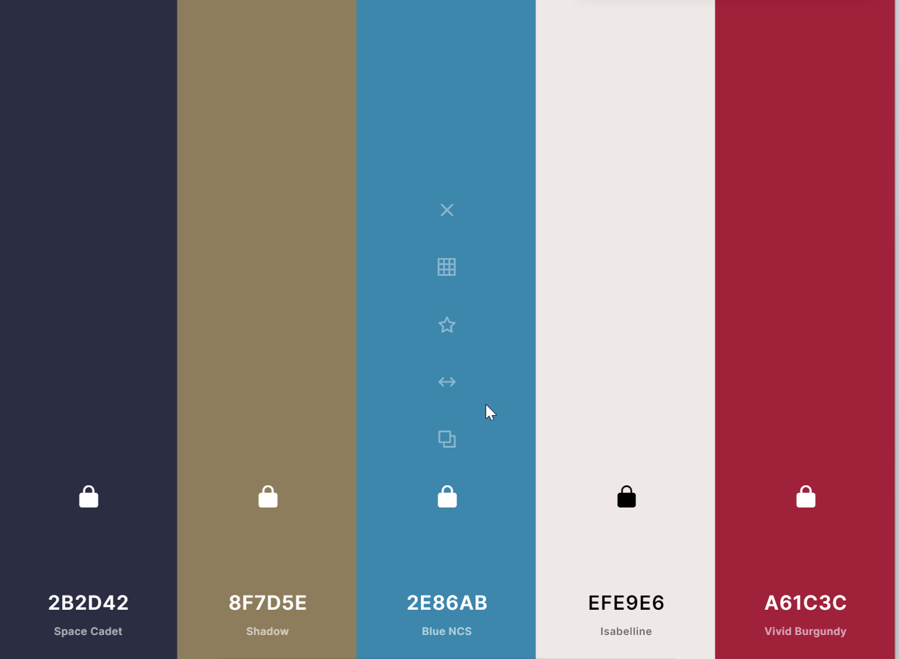

Diamond City Chamber Colors
I chose these colors because they all go really well together and match the logo I made really well.
- Space cadet will be used as the font color on light backfrounds
- Shadow is being used as the backgreound color for the heager and footer as well as the detail and text in the log
- Isabelline is the main backgroung color and the font that is used on darker colors
- Vivid Burgundy is currently used on the navigation buttons
- BlueNCS is currently not used but I want to encorporate it if I can.